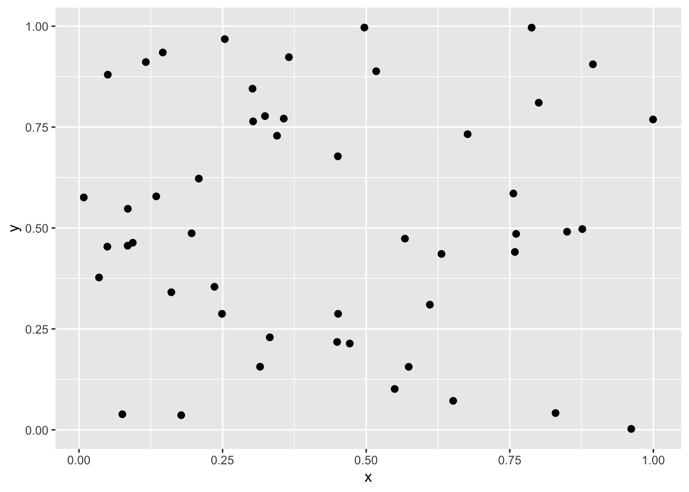
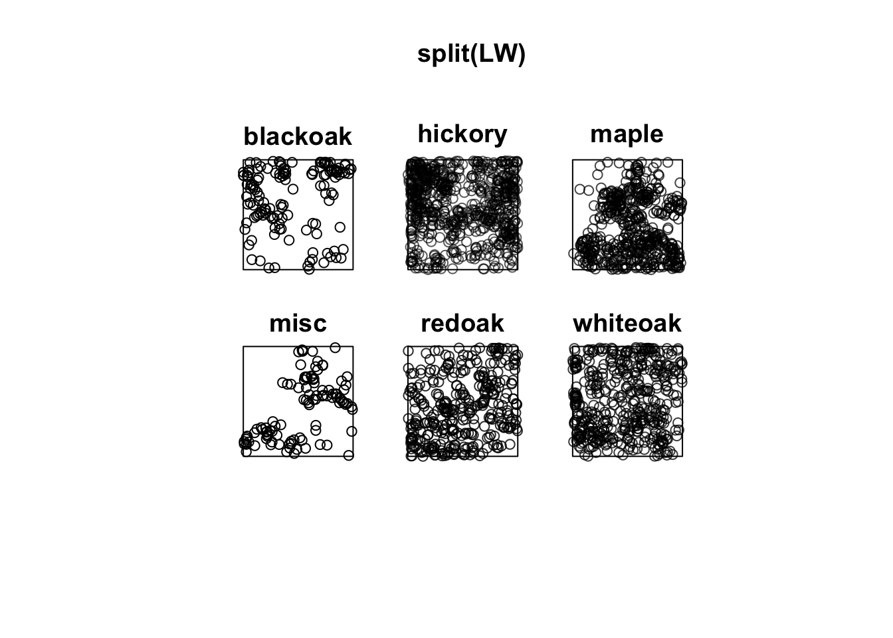
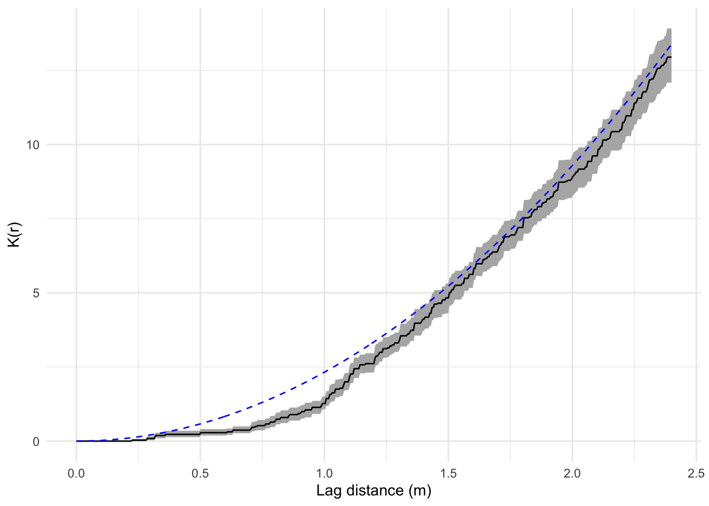

Tuesday October 4, 2022
“You haven’t mastered a tool until you understand when it should not be used.” – Kelsey Hightower
A former PhD student from this department, who I had the pleasure to supervise, is looking for a masters-level geographer to assist with disease mapping and basic spatial analysis as applied to livestock disease.
To support non-spatial scientists (virologists, field epidemiologists) and post-docs (some with spatial analysis expertise) in the mapping and visualizing of disease occurrence data from across the US and encouraged to develop independent projects leading to publication. Flexible work location especially if working toward a PhD.
Here’s the link: https://www.zintellect.com/Opportunity/Details/USDA-ARS-2022-0343
My answers to Lab 2 are on Canvas.
Making maps with {rdeck} https://www.mrworthington.com/articles/rstats/mapping-in-r/ Excellent resource on data visualization https://clauswilke.com/dataviz/
Today
- Defining spatial neighborhoods and spatial weights
- Computing spatial autocorrelation
- Spatial lag and its relation to autocorrelation
- Other neighbor definitions
This lesson marks a departure. You will continue to learn how to code in R, but you will do it in the context of statistical thinking, analysis, and modeling. I find statistics to be a natural extension to how I think about the world, but I realize this comes with experience and may not be natural to you.
Defining spatial neighborhoods and spatial weights
Autocorrelation plays a central role in spatial statistics. It quantifies the degree to which things nearby tend to cluster.
Things include values of variables (attributes) aggregated to polygons (or raster cells) as well as the spatial locations of objects. How autocorrelation gets estimated depends on the geometry of the spatial data.
Things tend to cluster because of:
Association: whatever causes an attribute to have a certain value in one area causes the same attribute to have a similar value in areas nearby. Crime rates in nearby neighborhoods might tend to cluster due to similar factors.
Causality: something within a given area directly influences outcomes within nearby areas. Non-infectious diseases (e.g., lung cancer) have similar rates in neighborhoods close to an oil refinery.
Interaction: the movement of people, goods or information creates relationships between areas. COVID spreads through areas through the movement of people.
Spatial statistics focuses on quantifying, and conditioning on, autocorrelation but it is silent about physical causes. Understanding the reason for autocorrelation in your data is important for inference because the causal mechanism might be confounded by its presence. Divorce rates tend to cluster high in southern states, but so does the number of Waffle Houses. Understanding causation requires domain specific knowledge.
When a variable’s values are aggregated (summed or averaged) to regions, autocorrelation is quantified by calculating how similar a value in region \(i\) is to the value in region \(j\) and weighting this similarity by how ‘close’ region \(i\) is to region \(j\). Closer regions are given greater weight.
High similarities with high weight (similar values close together) yield high values of spatial autocorrelation. Low similarities with high weight (dissimilar values close together) yield low values of spatial autocorrelation.
Let \(\hbox{sim}_{ij}\) denote the similarity between values \(Y_i\) and \(Y_j\), and let \(w_{ij}\) denote a set of weights describing the ‘distance’ between regions \(i\) and \(j\), for \(i\), \(j\) = 1, …, \(N\).
A general spatial autocorrelation index (SAI) is given by \[ \hbox{SAI} = \frac{\sum_{i,j=1}^N w_{ij}\hbox{sim}_{ij}}{\sum_{i,j=1}^N w_{ij}} \] which represents the weighted similarity between regions. The set of weights (\(w_{ij}\)) is called a spatial weights matrix. The spatial weights matrix defines the neighbors for each region and defines the strength of each association.
For cells in a raster under the rook-contiguity criterion, \(w_{ij}\) = 1 if cell \(i\) and \(j\) share a boundary, and 0 if they don’t share a boundary. In this case \(w_{ij}\) = \(w_{ji}\). Also, a cell is not a neighbor of itself so \(w_{ii}\) = 0.
Alternatively you can define center locations from a set of polygon regions and let \(w_{ij}\) = 1 if the center of region \(i\) is near the center of region \(j\) and 0 otherwise. In this case you need to decide on the number of nearest neighbors.
You can also define neighbors by distance. For example, if \(d_{ij}\) is the distance between centers \(i\) and \(j\), you can let \(w_{ij}\) = 1 if \(d_{ij}\) < \(\delta\) and 0 otherwise.
Consider crime data at the tract level in the city of Columbus, Ohio. The tract polygons are planar projected with arbitrary spatial coordinates.
if(!"columbus" %in% list.files("data")) {
download.file(url = "http://myweb.fsu.edu/jelsner/temp/data/columbus.zip",
destfile = here::here("data", "columbus.zip"))
unzip(here::here("data", "columbus.zip"),
exdir = here::here("data"))
}
( CC.sf <- sf::st_read(dsn = here::here("data", "columbus"),
layer = "columbus") )## Reading layer `columbus' from data source
## `/Users/jameselsner/Desktop/ClassNotes/ASS-2022/data/columbus'
## using driver `ESRI Shapefile'
## Simple feature collection with 49 features and 20 fields
## Geometry type: POLYGON
## Dimension: XY
## Bounding box: xmin: 5.874907 ymin: 10.78863 xmax: 11.28742 ymax: 14.74245
## CRS: NA## Simple feature collection with 49 features and 20 fields
## Geometry type: POLYGON
## Dimension: XY
## Bounding box: xmin: 5.874907 ymin: 10.78863 xmax: 11.28742 ymax: 14.74245
## CRS: NA
## First 10 features:
## AREA PERIMETER COLUMBUS_ COLUMBUS_I POLYID NEIG HOVAL INC CRIME
## 1 0.309441 2.440629 2 5 1 5 80.467 19.531 15.725980
## 2 0.259329 2.236939 3 1 2 1 44.567 21.232 18.801754
## 3 0.192468 2.187547 4 6 3 6 26.350 15.956 30.626781
## 4 0.083841 1.427635 5 2 4 2 33.200 4.477 32.387760
## 5 0.488888 2.997133 6 7 5 7 23.225 11.252 50.731510
## 6 0.283079 2.335634 7 8 6 8 28.750 16.029 26.066658
## 7 0.257084 2.554577 8 4 7 4 75.000 8.438 0.178269
## 8 0.204954 2.139524 9 3 8 3 37.125 11.337 38.425858
## 9 0.500755 3.169707 10 18 9 18 52.600 17.586 30.515917
## 10 0.246689 2.087235 11 10 10 10 96.400 13.598 34.000835
## OPEN PLUMB DISCBD X Y NSA NSB EW CP THOUS NEIGNO
## 1 2.850747 0.217155 5.03 38.80 44.07 1 1 1 0 1000 1005
## 2 5.296720 0.320581 4.27 35.62 42.38 1 1 0 0 1000 1001
## 3 4.534649 0.374404 3.89 39.82 41.18 1 1 1 0 1000 1006
## 4 0.394427 1.186944 3.70 36.50 40.52 1 1 0 0 1000 1002
## 5 0.405664 0.624596 2.83 40.01 38.00 1 1 1 0 1000 1007
## 6 0.563075 0.254130 3.78 43.75 39.28 1 1 1 0 1000 1008
## 7 0.000000 2.402402 2.74 33.36 38.41 1 1 0 0 1000 1004
## 8 3.483478 2.739726 2.89 36.71 38.71 1 1 0 0 1000 1003
## 9 0.527488 0.890736 3.17 43.44 35.92 1 1 1 0 1000 1018
## 10 1.548348 0.557724 4.33 47.61 36.42 1 1 1 0 1000 1010
## geometry
## 1 POLYGON ((8.624129 14.23698...
## 2 POLYGON ((8.25279 14.23694,...
## 3 POLYGON ((8.653305 14.00809...
## 4 POLYGON ((8.459499 13.82035...
## 5 POLYGON ((8.685274 13.63952...
## 6 POLYGON ((9.401384 13.5504,...
## 7 POLYGON ((8.037741 13.60752...
## 8 POLYGON ((8.247527 13.58651...
## 9 POLYGON ((9.333297 13.27242...
## 10 POLYGON ((10.08251 13.03377...The simple feature data frame contains housing values (HOVAL), income values (INC) and (CRIME) in census tracts across the city. Crime (CRIME) is residential burglaries and vehicle thefts per 1000 households. Income (INC) and housing values (HOVAL) are annual values with units of 1000 dollars.
Create a choropleth map of the crime rates (CRIME).
tmap::tm_shape(CC.sf) +
tmap::tm_fill(col = "CRIME",
title = "Burglary & Vehicle Thefts\n/1000 Households")## Warning: Currect projection of shape CC.sf unknown. Long-lat (WGS84) is assumed.
Note that the variable name CRIME must be in quotes.
Alternatively you create a choropleth map of the crime rates using geom_sf(). Here the variable name CRIME is without quotes.
library(ggplot2)
ggplot(data = CC.sf) +
geom_sf(mapping = aes(fill = CRIME)) +
labs(fill = "Burglary & Vehicle Thefts\n/1000 Households") +
theme_void()
High (and low) crime areas tend to be clustered.
Autocorrelation quantifies the amount of clustering. To compute the autocorrelation you first need to define the neighbors for each polygon.
You create a list of neighbors using the spdep::poly2nb() function from the {spdep} package. Functions in the {spdep} package support S3 and S4 spatial data objects.
The ‘nb’ in the function names stands for neighbor (list) object. The function builds the list from geometries based on contiguity. Neighbors must share a border. By default contiguity is defined as having at least one location along a border common. This is changed by using the argument queen = FALSE.
if(!require(spdep)) install.packages("spdep", repos = "http://cran.us.r-project.org")## Loading required package: spdep## Loading required package: sp## Loading required package: spData## Loading required package: sf## Linking to GEOS 3.10.2, GDAL 3.4.2, PROJ 8.2.1; sf_use_s2() is TRUE( nbs <- spdep::poly2nb(CC.sf) )## Neighbour list object:
## Number of regions: 49
## Number of nonzero links: 236
## Percentage nonzero weights: 9.829238
## Average number of links: 4.816327The output tells you there are 49 tracts (polygons). Each tract is bordered by at least one other tract. The average number of neighbors is 4.8. The total number of neighbors over all tracts is 236. This represents 9.8% of all possible connections (if every tract is a neighbor of itself and every other tract 49 * 49).
Note that this only works for spatial data frames. It will not work for a regular data frame where the spatial coordinates are defined as variables.
A graph of the tracts as nodes and neighbors as links is obtained with the plot() method. The arguments include the neighbor list object (here you assigned it the name nbs) and the location of the polygon centers, which are extracted from the simple feature data frame using the sf::st_centroid().
plot(CC.sf$geometry)
plot(nbs,
sf::st_centroid(CC.sf$geometry),
add = TRUE)
The graph is a network showing the contiguity pattern (adjacency or neighbor structure). Tracts close to the center of the city have more neighboring tracts and thus more links in the network.
The number of links per tract (node)–link distribution–is obtained with the summary() method.
nbs |>
summary()## Neighbour list object:
## Number of regions: 49
## Number of nonzero links: 236
## Percentage nonzero weights: 9.829238
## Average number of links: 4.816327
## Link number distribution:
##
## 2 3 4 5 6 7 8 9 10
## 5 9 12 5 9 3 4 1 1
## 5 least connected regions:
## 1 6 42 46 47 with 2 links
## 1 most connected region:
## 20 with 10 linksThe list of neighboring tracts for the first two tracts.
nbs[[1]]## [1] 2 3nbs[[2]]## [1] 1 3 4The first tract has two neighbors that include tracts 2 and 3. The neighbor numbers are stored as an integer vector within the nb object. Tract 2 has three neighbors that include tracts 1, 3, and 4. Tract 5 has 8 neighbors and so on. The function spdep::card() tallies the number of neighbors by tract.
spdep::card(nbs)## [1] 2 3 4 4 8 2 4 6 8 4 5 6 4 6 6 8 3 4 3 10 3 6 3 7 8
## [26] 6 4 9 7 5 3 4 4 4 7 5 6 6 3 5 3 2 6 5 4 2 2 4 3Tract 5 has 8 neighbors and so on.
The next step is to include weights to the neighbor list object indicating how ‘close’ each neighbor is. The function spdep::nb2listw() turns the neighbor list object into a spatial weights object. By default the weighting scheme gives each link the same weight equal to the multiplicative inverse of the number of neighbors.
wts <- nbs |>
spdep::nb2listw()
class(wts)## [1] "listw" "nb"This wts object is a list with two elements. The first element (listw) is the weights matrix and the second element (nb) is the neighbor list object.
wts |>
summary()## Characteristics of weights list object:
## Neighbour list object:
## Number of regions: 49
## Number of nonzero links: 236
## Percentage nonzero weights: 9.829238
## Average number of links: 4.816327
## Link number distribution:
##
## 2 3 4 5 6 7 8 9 10
## 5 9 12 5 9 3 4 1 1
## 5 least connected regions:
## 1 6 42 46 47 with 2 links
## 1 most connected region:
## 20 with 10 links
##
## Weights style: W
## Weights constants summary:
## n nn S0 S1 S2
## W 49 2401 49 22.75119 203.7091The network statistics are given along with information about the weights. The default weighting scheme assigns a weight to each neighbor equal to the inverse of the number of neighbors (style = "W"). For a tract with 5 neighbors each neighbor gets a weight of 1/5. The sum over all weights (S0) is the number of tracts.
To see the weights for the first two tracts type
wts$weights[1:2]## [[1]]
## [1] 0.5 0.5
##
## [[2]]
## [1] 0.3333333 0.3333333 0.3333333The object weights represents the weights matrix as a list. The full matrix has dimensions 49 x 49 but most of the entries are zero since for a given tract most tracts are not neighbors.
nbs |>
spdep::nb2mat() |>
head()## [,1] [,2] [,3] [,4] [,5] [,6] [,7] [,8] [,9] [,10] [,11]
## 1 0.0000000 0.50 0.5000000 0.0000000 0.00 0.000 0 0.000 0.000 0 0.000
## 2 0.3333333 0.00 0.3333333 0.3333333 0.00 0.000 0 0.000 0.000 0 0.000
## 3 0.2500000 0.25 0.0000000 0.2500000 0.25 0.000 0 0.000 0.000 0 0.000
## 4 0.0000000 0.25 0.2500000 0.0000000 0.25 0.000 0 0.250 0.000 0 0.000
## 5 0.0000000 0.00 0.1250000 0.1250000 0.00 0.125 0 0.125 0.125 0 0.125
## 6 0.0000000 0.00 0.0000000 0.0000000 0.50 0.000 0 0.000 0.500 0 0.000
## [,12] [,13] [,14] [,15] [,16] [,17] [,18] [,19] [,20] [,21] [,22] [,23] [,24]
## 1 0 0 0 0.000 0.000 0 0 0 0 0 0 0 0
## 2 0 0 0 0.000 0.000 0 0 0 0 0 0 0 0
## 3 0 0 0 0.000 0.000 0 0 0 0 0 0 0 0
## 4 0 0 0 0.000 0.000 0 0 0 0 0 0 0 0
## 5 0 0 0 0.125 0.125 0 0 0 0 0 0 0 0
## 6 0 0 0 0.000 0.000 0 0 0 0 0 0 0 0
## [,25] [,26] [,27] [,28] [,29] [,30] [,31] [,32] [,33] [,34] [,35] [,36] [,37]
## 1 0 0 0 0 0 0 0 0 0 0 0 0 0
## 2 0 0 0 0 0 0 0 0 0 0 0 0 0
## 3 0 0 0 0 0 0 0 0 0 0 0 0 0
## 4 0 0 0 0 0 0 0 0 0 0 0 0 0
## 5 0 0 0 0 0 0 0 0 0 0 0 0 0
## 6 0 0 0 0 0 0 0 0 0 0 0 0 0
## [,38] [,39] [,40] [,41] [,42] [,43] [,44] [,45] [,46] [,47] [,48] [,49]
## 1 0 0 0 0 0 0 0 0 0 0 0 0
## 2 0 0 0 0 0 0 0 0 0 0 0 0
## 3 0 0 0 0 0 0 0 0 0 0 0 0
## 4 0 0 0 0 0 0 0 0 0 0 0 0
## 5 0 0 0 0 0 0 0 0 0 0 0 0
## 6 0 0 0 0 0 0 0 0 0 0 0 0To see the neighbors of the first two tracts type
wts$neighbours[1:2]## [[1]]
## [1] 2 3
##
## [[2]]
## [1] 1 3 4Tract 1 has two neighbors (tract 2 & 3) so each are given a weight of 1/2. Tract 2 has three neighbors (tract 1, 3, & 4) so each are given a weight of 1/3.
With the weights matrix saved as an object you are ready to compute a metric of spatial autocorrelation.
Caution: Neighbors defined by contiguity can leave some areas without any neighbors. Islands for example. By default the spdep::nb2listw() function assumes each area has at least one neighbor. If this is not the case you need to specify how areas without neighbors are handled using the argument zero.policy = TRUE. This permits the weights list to be formed with zero-length weight vectors.
For example, consider the districts in the country of Scotland.
if(!"scotlip" %in% list.files(here::here("data"))) {
download.file("http://myweb.fsu.edu/jelsner/temp/data/scotlip.zip",
destfile = here::here("data", "scotlip.zip"))
unzip(here::here("data", "scotlip.zip"),
exdir = here::here("data"))
}
SL.sf <- sf::st_read(dsn = here::here("data", "scotlip"),
layer = "scotlip")## Reading layer `scotlip' from data source
## `/Users/jameselsner/Desktop/ClassNotes/ASS-2022/data/scotlip'
## using driver `ESRI Shapefile'
## Simple feature collection with 56 features and 11 fields
## Geometry type: POLYGON
## Dimension: XY
## Bounding box: xmin: 95631 ymin: 530297 xmax: 454570 ymax: 1203008
## CRS: NAplot(SL.sf$geometry)
Three of the districts are islands. These districts have no bordering districts.
Create a list of neighbors based on contiguity (default).
( nbs2 <- SL.sf |>
spdep::poly2nb() )## Neighbour list object:
## Number of regions: 56
## Number of nonzero links: 234
## Percentage nonzero weights: 7.461735
## Average number of links: 4.178571
## 3 regions with no links:
## 6 8 11Three regions have no neighbors and thus no links.
Use the spdep::nb2listw() function with the argument zero.policy = TRUE. Otherwise you get an error saying the empty neighbor sets are found.
wts2 <- nbs2 |>
spdep::nb2listw(zero.policy = TRUE)
head(wts2$weights)## [[1]]
## [1] 0.3333333 0.3333333 0.3333333
##
## [[2]]
## [1] 0.5 0.5
##
## [[3]]
## [1] 1
##
## [[4]]
## [1] 0.3333333 0.3333333 0.3333333
##
## [[5]]
## [1] 0.3333333 0.3333333 0.3333333
##
## [[6]]
## NULLThe sixth region has no neighbors and so the 6th element of the list is set to NULL.
Once you have a weights matrix defining neighbors and the associated strength of the neighbor relationship, you are ready to compute various statistics of spatial autocorrelation.
Computing autocorrelation
A commonly used spatial autocorrelation statistic is Moran’s I. Moran’s I follows the basic form of autocorrelation indexes where the similarity between regions \(i\) and \(j\) is proportional to the product of the deviations from the mean
\[ \hbox{sim}_{ij} \propto (Y_i - \bar Y) (Y_j - \bar Y) \]
where \(i\) indexes the region and \(j\) indexes the neighbors of \(i\). The value of \(\hbox{sim}_{ij}\) is large when the \(Y\) values in the product are on the same side of their respective means (both above or below) and small when they are on opposite sides of their respective means (one above and one below or vice versa).
The formula for I is
\[ \hbox{I} = \frac{N} {W} \frac {\sum_{i,j} w_{ij}(Y_i-\bar Y) (Y_j-\bar Y)} {\sum_{i} (Y_i-\bar Y)^2} \] where \(N\) is the number regions, \(w_{ij}\) is the matrix of weights, and \(W\) is the sum over all weights.
Consider the following grid of cells containing attribute values.
if(!require(spatstat)) install.packages(pkgs = "spatstat", repos = "http://cran.us.r-project.org")## Loading required package: spatstat## Loading required package: spatstat.data## Loading required package: spatstat.geom## spatstat.geom 2.4-0## Loading required package: spatstat.random## spatstat.random 2.2-0## Loading required package: spatstat.core## Loading required package: nlme## Loading required package: rpart## spatstat.core 2.4-4## Loading required package: spatstat.linnet## spatstat.linnet 2.3-2##
## spatstat 2.3-4 (nickname: 'Watch this space')
## For an introduction to spatstat, type 'beginner'suppressMessages(library(spatstat))
set.seed(6750)
Y <- ppp(runif(200, 0, 1),
runif(200, 0, 1))
plot(quadratcount(Y), main = "")
The formula for Moran’s I results in one value representing the magnitude of the autocorrelation (amount of clustering) over the entire area (global Moran’s I).
First consider a single cell in the area (\(N\) = 1). Start with the middle cell (row 3, column 3). Let \(i\) = 3 in the above formula and let \(j\) index the cells touching the center cell in reading order starting with cell (2, 2), then cell (2, 3), etc.
Assume each neighbor is given a weight of 1/8 so \(W = \sum_{j=1}^8 w_j = 1\). Then the value of I for the single center cell is I_{3, 3} = (6 - mean(y)) * ((8 - mean(y)) + (3 - mean(y)) + (9 - mean(y)) + (12 - mean(y)) + (10 - mean(y)) + (10 - mean(y)) + (9 - mean(y))) / (6 - mean(y))^2)
y <- c(3, 10, 7, 12, 5, 11, 8, 3, 9, 12,
6, 12, 6, 10, 3, 8, 10, 10, 9, 7,
5, 10, 8, 5, 11)
( yb <- mean(y) )## [1] 8Inum_i <- (6 - yb) *
((8 - yb) + (3 - yb) + (9 - yb) +
(12 - yb) + (10 - yb) + (10 - yb) +
(10 - yb) + (9 - yb))
Iden_i <- (6 - yb)^2
Inum_i/Iden_i## [1] -3.5The I value of -3.5 indicates that the center cell, which has a value below the average over all 25 cells, is mostly surrounded by cells having values above the average.
Now repeat this calculation for every cell and then take the sum over all the 25 I values.
This is what the function spdep::moran() from the {spdep} package does. The first argument is the vector containing the values for which you are interested in determining the magnitude of the spatial autocorrelation and the second argument is the listw object.
Further, you need to specify the number of regions and the sum of the weights S0. The latter is obtained from the spdep::Szero() function applied to the listw object.
Returning to the Columbus crime data here let m be the number of census tracts and s be the sum of the weights. You then apply the spdep::moran() function on the variable CRIME.
( m <- CC.sf$CRIME |>
length() )## [1] 49( s <- wts |>
spdep::Szero() )## [1] 49CC.sf$CRIME |>
spdep::moran(listw = wts,
n = m,
S0 = s)## $I
## [1] 0.5001886
##
## $K
## [1] 2.225946The function returns the value of Moran’s I and the kurtosis (K) of the distribution of crime values. Moran’s I ranges from -1 to +1.
The value of .5 for the crime rates indicates a high level of spatial autocorrelation. This is expected based on the clustering of crime in the central city.
Positive values of Moran’s I indicate clustering and negative values indicate inhibition. Inhibition is a process leading to nearby values having attribute values that are opposite in magnitude to those at each location (like a checkerboard pattern)
Kurtosis is a statistic that indicates how peaked the distribution of the attribute values is. A normal distribution has a kurtosis of 3. If the kurtosis is too large (or small) relative to a normal distribution then any statistical inference we make with Moran’s I will be suspect.
Read more about Moran’s I here Wikipedia Moran’s I
Another statistic that indicates the amount of spatial autocorrelation is Geary’s C. The equation is
\[ \hbox{C} = \frac{(N-1) \sum_{i,j} w_{ij} (Y_i-Y_j)^2}{2 W \sum_{i}(Y_i-\bar Y)^2} \] where \(W\) is the sum over all weights (\(w_{ij}\)) and \(N\) is the number of areas.
The syntax of the spdep::geary() function is similar that of spdep::moran() except you also need to specify n1 as one minus the number of areas.
CC.sf$CRIME |>
spdep::geary(listw = wts,
n = m,
S0 = s,
n1 = m - 1)## $C
## [1] 0.5405282
##
## $K
## [1] 2.225946Values for Geary’s C range from 0 to 2 with 1 indicating no autocorrelation. Values less than 1 indicate positive autocorrelation. Both I and C are global measures of autocorrelation, but C is more sensitive to local variations in autocorrelation.
Rule of thumb: If the interpretation of Geary’s C is much different than the interpretation of Moran’s I then consider computing local measures of autocorrelation.
More information on Geary’s C statistic here Wikipedia Geary’s C
Spatial lag and its relation to autocorrelation
Understanding Moran’s I is simplified by noted that it is the slope coefficient resulting from a regression of the average neighborhood values onto the observed values. An average of neighborhood values is called the spatial lag variable.
To see this, let crime be the set of crime values (from the Columbus data) in each region as a data vector. You create a spatial lag variable using the spdep::lag.listw() function. The first argument is the listw object and the second is the vector of crime values.
crime <- CC.sf$CRIME
Wcrime <- spdep::lag.listw(wts,
crime)For each value in the vector crime there is a corresponding value in the vector Wcrime representing the average crime over the neighboring regions.
To verify, recall tract 1 had tract 2 and 3 as its two neighbors. So the following code should return a TRUE.
(crime[2] + crime[3])/2 == Wcrime[1] ## [1] TRUEThe lagged value of crime in tract 1 is equal to the average of the crime in the two neighboring tracts.
Make a scatter plot showing individual observed crime rates on the horizontal axis and the corresponding neighborhood average crime rates on the vertical axis.
data.frame(crime, Wcrime) |>
ggplot(mapping = aes(x = crime, y = Wcrime)) +
geom_point() +
geom_smooth(method = lm) +
scale_x_continuous(limits = c(0, 70)) +
scale_y_continuous(limits = c(0, 70)) +
xlab("Crime") +
ylab("Average Crime in the Neighborhood") +
theme_minimal()## `geom_smooth()` using formula 'y ~ x'
The range of neighborhood average crime rates is smaller than the range of observed crime rates since the mean of a set of observations will always have less variance (dispersion) than the observations.
The scatter plot shows that tracts with low values of crime tend to be surrounded by tracts with low values of crime on average and tracts with high values of crime tend be surrounded by tracts with high values of crime. The slope on the regression line is upward (positive).
The magnitude of the slope is Moran’s I. To check this use the lm() function from the base set of packages. The function is used to fit linear regression models.
lm(Wcrime ~ crime)##
## Call:
## lm(formula = Wcrime ~ crime)
##
## Coefficients:
## (Intercept) crime
## 17.4797 0.5002The coefficient on the crime variable in the linear regression is .5.
The scatter plot is called a ‘Moran’s scatter plot.’
Let’s consider another data set.
if(!"sids2" %in% list.files(here::here("data"))) {
download.file("http://myweb.fsu.edu/jelsner/temp/data/sids2.zip",
destfile = here::here("data", "sids2.zip"))
unzip(here::here("data", "sids2.zip"),
exdir = here::here("data"))
}
SIDS.sf <- sf::st_read(dsn = here::here("data", "sids2")) |>
sf::st_set_crs(4326)## Reading layer `sids2' from data source
## `/Users/jameselsner/Desktop/ClassNotes/ASS-2022/data/sids2'
## using driver `ESRI Shapefile'
## Simple feature collection with 100 features and 18 fields
## Geometry type: MULTIPOLYGON
## Dimension: XY
## Bounding box: xmin: -84.32385 ymin: 33.88199 xmax: -75.45698 ymax: 36.58965
## CRS: NAhead(SIDS.sf)## Simple feature collection with 6 features and 18 fields
## Geometry type: MULTIPOLYGON
## Dimension: XY
## Bounding box: xmin: -81.74107 ymin: 36.07282 xmax: -75.77316 ymax: 36.58965
## Geodetic CRS: WGS 84
## AREA PERIMETER CNTY_ CNTY_ID NAME FIPS FIPSNO CRESS_ID BIR74 SID74
## 1 0.114 1.442 1825 1825 Ashe 37009 37009 5 1091 1
## 2 0.061 1.231 1827 1827 Alleghany 37005 37005 3 487 0
## 3 0.143 1.630 1828 1828 Surry 37171 37171 86 3188 5
## 4 0.070 2.968 1831 1831 Currituck 37053 37053 27 508 1
## 5 0.153 2.206 1832 1832 Northampton 37131 37131 66 1421 9
## 6 0.097 1.670 1833 1833 Hertford 37091 37091 46 1452 7
## NWBIR74 BIR79 SID79 NWBIR79 SIDR74 SIDR79 NWR74 NWR79
## 1 10 1364 0 19 0.916590 0.000000 9.165903 13.92962
## 2 10 542 3 12 0.000000 5.535055 20.533881 22.14022
## 3 208 3616 6 260 1.568381 1.659292 65.244668 71.90265
## 4 123 830 2 145 1.968504 2.409639 242.125984 174.69879
## 5 1066 1606 3 1197 6.333568 1.867995 750.175932 745.33001
## 6 954 1838 5 1237 4.820937 2.720348 657.024793 673.01415
## geometry
## 1 MULTIPOLYGON (((-81.47276 3...
## 2 MULTIPOLYGON (((-81.23989 3...
## 3 MULTIPOLYGON (((-80.45634 3...
## 4 MULTIPOLYGON (((-76.00897 3...
## 5 MULTIPOLYGON (((-77.21767 3...
## 6 MULTIPOLYGON (((-76.74506 3...The column SIDR79 contains the death rate (per 1000 live births) (1979-84) from sudden infant death syndrome. Create a choropleth map of the SIDS rates.
tmap::tm_shape(SIDS.sf) +
tmap::tm_fill("SIDR79", title = "") +
tmap::tm_borders(col = "gray70") +
tmap::tm_layout(title = "SIDS Rates 1979-84 [per 1000]",
legend.outside = TRUE)
Create a neighborhood list (nb) and a listw object (wts) then graph the neighborhood network.
nbs <- spdep::poly2nb(SIDS.sf)
wts <- spdep::nb2listw(nbs)
plot(nbs,
sf::st_centroid(st_geometry(SIDS.sf)))
Next compute Moran’s I on the SIDS rates using the variable SIDR79 (1974-1979).
m <- length(SIDS.sf$SIDR79)
s <- spdep::Szero(wts)
spdep::moran(SIDS.sf$SIDR79,
listw = wts,
n = m,
S0 = s)## $I
## [1] 0.1427504
##
## $K
## [1] 4.44434I is .14 and K is 4.4. A normal distribution has a kurtosis of 3. Values less than about 2 or greater than about 4 indicate that inferences about autocorrelation based on the assumption of normality are suspect.
Weights are specified using the style = argument in the nb2listw() function. The default “W” is row standardized (sum of the weights over all links equals the number of polygons). “B” is binary (each neighbor gets a weight of one). “S” is a variance stabilizing scheme.
Each style gives a somewhat different value for I.
x <- SIDS.sf$SIDR79
spdep::moran.test(x, spdep::nb2listw(nbs, style = "W"))$estimate[1]## Moran I statistic
## 0.1427504spdep::moran.test(x, spdep::nb2listw(nbs, style = "B"))$estimate[1] # binary## Moran I statistic
## 0.1105207spdep::moran.test(x, spdep::nb2listw(nbs, style = "S"))$estimate[1] # variance-stabilizing## Moran I statistic
## 0.1260686When reporting a Moran’s I you need to state what type of weighting was used.
Let sids be a vector with elements containing the SIDS rate in each county. You create a spatial lag variable using the spdep::lag.listw() function. The first argument is the listw object and the second is the vector of rates.
sids <- SIDS.sf$SIDR79
Wsids <- spdep::lag.listw(wts,
sids)For each value in the vector sids there is a corresponding value in the object Wsids representing the neighborhood average SIDS rate.
Wsids[1]## [1] 2.65921j <- wts$neighbours[[1]]
j## [1] 2 18 19sum(SIDS.sf$SIDR79[j])/length(j)## [1] 2.65921The weight for county one is Wsids[1] = 2.659. The neighbor indexes for this county are in the vector wts$neighbours[[1]] of length 3. Add the SIDS rates from those counties and divide by the number of counties (length(j)).
A scatter plot of the neighborhood average SIDS rate versus the actual SIDS rate in each region.
data.frame(sids, Wsids) |>
ggplot(mapping = aes(x = sids, y = Wsids)) +
geom_point() +
geom_smooth(method = lm) +
scale_x_continuous(limits = c(0, 7)) +
scale_y_continuous(limits = c(0, 7)) +
xlab("SIDS") + ylab("Spatial Lag of SIDS") +
theme_minimal()## `geom_smooth()` using formula 'y ~ x'
The regression line slopes upward indicating positive spatial autocorrelation. The value of the slope is Moran’s I. To check this type
lm(Wsids ~ sids)##
## Call:
## lm(formula = Wsids ~ sids)
##
## Coefficients:
## (Intercept) sids
## 1.7622 0.1428Other neighbor definitions
Other neighbor definitions are possible and the choice will influence the value of any statistic of spatial autocorrelation.
Let’s consider the historical demographic data in Mississippi counties. Import the data as a simple feature data frame and assign the geometry a geographic CRS.
if(!"police" %in% list.files(here::here("data"))) {
download.file(url = "http://myweb.fsu.edu/jelsner/temp/data/police.zip",
destfile = here::here("data", "police.zip"))
unzip(here::here("data", "police.zip"),
exdir = here::here("data"))
}
( PE.sf <- sf::st_read(dsn = here::here("data", "police"),
layer = "police") |>
sf::st_set_crs(4326) )## Reading layer `police' from data source
## `/Users/jameselsner/Desktop/ClassNotes/ASS-2022/data/police'
## using driver `ESRI Shapefile'
## Simple feature collection with 82 features and 21 fields
## Geometry type: POLYGON
## Dimension: XY
## Bounding box: xmin: -91.64356 ymin: 30.19474 xmax: -88.09043 ymax: 35.00496
## CRS: NA## Simple feature collection with 82 features and 21 fields
## Geometry type: POLYGON
## Dimension: XY
## Bounding box: xmin: -91.64356 ymin: 30.19474 xmax: -88.09043 ymax: 35.00496
## Geodetic CRS: WGS 84
## First 10 features:
## AREA PERIMETER CNTY_ CNTY_ID NAME STATE_NAME STATE_FIPS CNTY_FIPS
## 1 0.105 1.401 2129 2129 Alcorn Mississippi 28 003
## 2 0.111 1.485 2130 2130 Tishomingo Mississippi 28 141
## 3 0.116 1.519 2131 2131 Tippah Mississippi 28 139
## 4 0.105 1.478 2132 2132 Benton Mississippi 28 009
## 5 0.127 1.774 2133 2133 De Soto Mississippi 28 033
## 6 0.181 1.911 2134 2134 Marshall Mississippi 28 093
## 7 0.119 2.146 2155 2155 Tunica Mississippi 28 143
## 8 0.103 1.571 2171 2171 Tate Mississippi 28 137
## 9 0.106 1.394 2176 2176 Prentiss Mississippi 28 117
## 10 0.109 1.493 2199 2199 Union Mississippi 28 145
## FIPS FIPSNO POLICE POP TAX TRANSFER INC CRIME UNEMP OWN COLLEGE WHITE
## 1 28003 28003 706 32500 122 12428 8206 43 7 70 23 89
## 2 28141 28141 247 19100 112 7278 6666 316 8 73 18 96
## 3 28139 28139 296 18800 93 8606 6865 5 7 71 18 84
## 4 28009 28009 116 8400 100 3494 6083 24 12 75 16 62
## 5 28033 28033 1063 56400 116 18555 8731 36 6 77 26 82
## 6 28093 28093 549 30900 87 10370 5825 316 11 71 22 47
## 7 28143 28143 291 9500 153 5354 6019 42 15 43 18 27
## 8 28137 28137 444 20500 137 13783 7837 20 8 67 29 61
## 9 28117 28117 455 24400 118 14650 6361 41 6 74 20 89
## 10 28145 28145 364 21400 117 8207 7530 46 5 73 22 86
## COMMUTE geometry
## 1 8 POLYGON ((-88.35416 34.7626...
## 2 8 POLYGON ((-88.32171 34.4693...
## 3 15 POLYGON ((-88.72614 34.6048...
## 4 41 POLYGON ((-89.23874 34.5935...
## 5 2 POLYGON ((-90.20186 34.7297...
## 6 12 POLYGON ((-89.66407 34.5659...
## 7 3 POLYGON ((-90.19978 34.5617...
## 8 11 POLYGON ((-89.71541 34.5659...
## 9 23 POLYGON ((-88.32171 34.4693...
## 10 20 POLYGON ((-89.24072 34.5017...Variables in the simple feature data frame include police expenditures (POLICE), crime (CRIME), income (INC), unemployment (UNEMP) and other socio-economic characteristics across Mississippi at the county level. Police expenditures are per person 1982 (dollars per person). Personal income is per person in 1982 (dollars per person). Crime is the number of serious crimes per 100,000 person in 1981. Unemployment is percent of people looking for work in 1980.
The geometries are polygons that define the county borders.
library(ggplot2)
ggplot(data = PE.sf) +
geom_sf()
To estimate autocorrelation for any variable in the data frame, you need to first assign the neighbors and weights for each region.
The default options in the spdep::poly2nb() and spdep::nb2listw() result in neighbors defined by ‘queen’ contiguity (polygon intersections can include a single point) and weights defined by row standardization (the sum of the weights equals the number of regions).
nbs <- spdep::poly2nb(PE.sf)
wts <- spdep::nb2listw(nbs)Alternatively you can specify the number of neighbors and then assign neighbors based on proximity (closeness). Here you first extract the coordinates of the polygon centroids as a matrix.
coords <- PE.sf |>
sf::st_centroid() |>
sf::st_coordinates()## Warning in st_centroid.sf(PE.sf): st_centroid assumes attributes are constant
## over geometries of xhead(coords)## X Y
## 1 -88.56938 34.88746
## 2 -88.23073 34.74665
## 3 -88.89928 34.77600
## 4 -89.17942 34.82323
## 5 -89.98973 34.88099
## 6 -89.49699 34.76984Then use the spdep::knearneigh() function on the coordinate matrix and specify the number of neighbors with the k = argument. Here you set it to six. That is, allow each county to have 6 closest neighbors.
Since the CRS is geographic you need to include the longlat = TRUE argument so distances are calculated using great circles.
knn <- spdep::knearneigh(coords,
k = 6,
longlat = TRUE)
names(knn)## [1] "nn" "np" "k" "dimension" "x"head(knn$nn)## [,1] [,2] [,3] [,4] [,5] [,6]
## [1,] 9 3 2 4 10 14
## [2,] 9 1 16 3 14 10
## [3,] 4 10 1 9 6 14
## [4,] 3 6 10 1 11 9
## [5,] 8 7 6 12 11 4
## [6,] 4 8 11 5 3 10The output is a list of five elements with the first element a matrix with the row dimension the number of counties and the column dimension the number of neighbors.
Note that by using distance to define neighbors the matrix is not symmetric. For example, county 3 is a neighbor of county 2, but county 2 is not a neighbor of county 3.
Certain spatial regression models require the neighbor matrix to be symmetric. That is if region X is a neighbor of region Y then region Y must be a neighbor of region X.
You turn this matrix into a neighbor object (class nb) with the spdep::knn2nb() function.
nbs2 <- spdep::knn2nb(knn)
summary(nbs2)## Neighbour list object:
## Number of regions: 82
## Number of nonzero links: 492
## Percentage nonzero weights: 7.317073
## Average number of links: 6
## Non-symmetric neighbours list
## Link number distribution:
##
## 6
## 82
## 82 least connected regions:
## 1 2 3 4 5 6 7 8 9 10 11 12 13 14 15 16 17 18 19 20 21 22 23 24 25 26 27 28 29 30 31 32 33 34 35 36 37 38 39 40 41 42 43 44 45 46 47 48 49 50 51 52 53 54 55 56 57 58 59 60 61 62 63 64 65 66 67 68 69 70 71 72 73 74 75 76 77 78 79 80 81 82 with 6 links
## 82 most connected regions:
## 1 2 3 4 5 6 7 8 9 10 11 12 13 14 15 16 17 18 19 20 21 22 23 24 25 26 27 28 29 30 31 32 33 34 35 36 37 38 39 40 41 42 43 44 45 46 47 48 49 50 51 52 53 54 55 56 57 58 59 60 61 62 63 64 65 66 67 68 69 70 71 72 73 74 75 76 77 78 79 80 81 82 with 6 linksIf you include the argument sym = TRUE in the knn2nb() function then it forces the neighbor matrix to be symmetric.
nbs3 <- spdep::knn2nb(knn,
sym = TRUE)
summary(nbs3)## Neighbour list object:
## Number of regions: 82
## Number of nonzero links: 568
## Percentage nonzero weights: 8.447353
## Average number of links: 6.926829
## Link number distribution:
##
## 6 7 8 9 10
## 37 25 13 3 4
## 37 least connected regions:
## 1 2 5 6 7 8 13 16 18 21 22 28 31 33 34 40 42 44 45 46 48 49 50 54 57 59 62 63 65 73 74 76 77 78 80 81 82 with 6 links
## 4 most connected regions:
## 10 19 66 70 with 10 linksThe result shows that six is now the minimum number of nearest neighbors with some counties having has many as 10 neighbors to guarantee symmetry.
Compare the default adjacency neighborhoods with the nearest-neighbor neighborhoods.
plot(sf::st_geometry(PE.sf), border = "grey")
plot(nbs, coords, add = TRUE)
plot(sf::st_geometry(PE.sf), border = "grey")
plot(nbs2, coords, add = TRUE)
A difference between the two neighborhoods is the number of links on counties along the borders. The nearest-neighbor defined neighborhoods have more links. Note: when neighbors are defined by proximity counties can share a border but they still may not be neighbors.
Your choice of neighbors is based on domain specific knowledge. If the process you are interested in can be described by a dispersal mechanism then proximity definition might be the right choice for defining neighbors. If the process can be described by a border diffusion mechanism then contiguity might be the right choice.
Create weight matrices for these alternative neighborhoods using the same spdep::nb2listw() function.
wts2 <- spdep::nb2listw(nbs2)
wts3 <- spdep::nb2listw(nbs3)You compute Moran’s I for the percentage of white people variable (WHITE) with the moran() function separately for the three different weight matrices.
spdep::moran(PE.sf$WHITE,
listw = wts,
n = length(nbs),
S0 = spdep::Szero(wts))## $I
## [1] 0.5634778
##
## $K
## [1] 2.300738spdep::moran(PE.sf$WHITE,
listw = wts2,
n = length(nbs2),
S0 = spdep::Szero(wts2))## $I
## [1] 0.5506132
##
## $K
## [1] 2.300738spdep::moran(PE.sf$WHITE,
listw = wts3,
n = length(nbs3),
S0 = spdep::Szero(wts3))## $I
## [1] 0.5592557
##
## $K
## [1] 2.300738Values of Moran’s I are constrained between -1 and +1. In this case the neighborhood definition has little or no impact on inferences made about spatial autocorrelation. The kurtosis is between 2 and 4 consistent with a set of values from a normal distribution.
In a similar way you compute the Geary’s C statistic.
spdep::geary(PE.sf$WHITE,
listw = wts,
n = length(nbs),
S0 = spdep::Szero(wts),
n1 = length(nbs) - 1)## $C
## [1] 0.4123818
##
## $K
## [1] 2.300738Values of Geary’s C range between 0 and 2 with values less than one indicating positive autocorrelation.
If the values of Moran’s I and Geary’s C result in different interpretations about the amount of clustering then it is a good idea to examine local variations in autocorrelation.